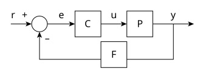

Analog Engineering Hub
Back to Tools
Feedback Network Analyzer

Plant
Gain (dB):
Pole (kHz):
Zero (kHz):
Compensator
Low Frequency Gain (dB):
at Frequency (Hz):
Pole (kHz):
Zero (kHz):
\( C(s) = \frac{1}{s} \)
Feedback
Gain (dB):
Enable Feedback Zero
Zero (kHz):
Enable Feedback Pole
Pole (kHz):
\( F(s) = 1 \)
Closed-Loop Results
Bandwidth:
0
kHz
Phase Margin:
0
°
Reset to Defaults
Plant Response
Compensator Response
\( C(s) = \frac{1}{s} \)
Feedback Response
\( F(s) = 1 \)
Closed-Loop Response